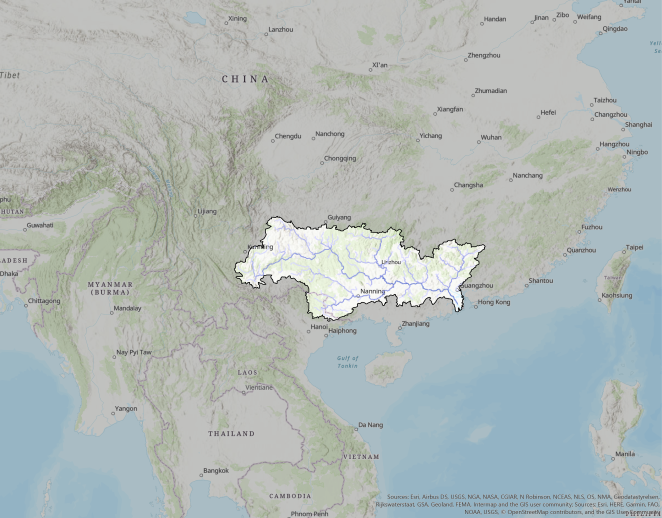

THE PEARL RIVER

The Pearl River delta is created by the Pearl River, which is also known as the Canton River. The name Pearl River is often used as a name for the rivers Xi (West), Bei (North) and Dong (East), because they all flow into the Pearl River delta. The river is over 2400 kilometers long, making it the longest river in China, after the Yangtze- and the Yellow River. Though it's larger than the Yellow river in terms of volume. Apart from being over 2000 kilometers long, the river has a basin of over 453700 square kilometers. The river mainly flows through China, originating in the south-eastern part of China, but a small area of the basin is also located in the northern part of Vietnam.
The Pearl River empties out into the ocean, creating a huge urban delta that is known to be one of the most dense urban areas on the planet. The urban delta is often called a megalopolis, considering the 9 major cities which are: Guangzhou, Shenzhen, Zhuhai, Foshan, Dongguan, Zhongshan, Jiangmen, Huizhou and Zhaoqing. As well as two special administrative regions called Hong Kong and Macau.
ECONOMIC POWERHOUSE AND IMPORTANCE
The Pearl River Delta covers 39380 square kilometers, which in itself is already impressive. Not a lot of urban area's are close to this size in general. But the urban area is also very densely populated. Picture high rises, with a lot of people living inside of one square kilometers. 1618 People per square kilometer to be exact. This should sketch the image of just how bit this urban metropolis really is. But the reason why this urban delta is so special is not just it's large population, it is it's economic- and political importance.
The 'Golden Delta of Guangdong' as it's often referred to as well, lives up to it's name. The GDP of the delta is around $2 Trillion. This is a huge number for a country, let alone one urban area. This is more than the GDP of all of Italy, which is the 8th biggest economy in the world. Even though this is 'only' 9,1% of China's total GDP, it is even more important in other aspects. Especially manufacturing. The industrial cities in this delta are, fittingly, called the 'Factory of the World'.
The Pearl River Delta is a major manufacturing base for a multitude of products. Especially electronics, like watches, phones, toys and garments. Some of the other important manufactured items include textiles and plastics.
The Greater Pearl River Delta is responsible for producing an immense 5% of the world's goods.
All this manufacturing leads the Pearl River Delta to become a huge export hub. The urban delta area accounts for 35,8 percent of total trade in all of China.
All of this means that the Golden Delta of Guangdong has a very bright future ahead of itself. Which is especially visible in the amount of foreign interest in the area. A large number of foreign companies invest heavily into the delta, because they, and not just China itself, are well-aware of the role that this delta is already taking in the global- and Chinese market.
THE PEARL RIVER DELTA'S GDP COMPARED TO OTHER BIG METROPOLITAN AREAS (IN BILLION $)
HISTORY AND TRADE
The Pearl River Delta is, as explained in the previous paragraph, very important to China's domestic market and it's international trade. Which means it would be safe to assume that this area has always been inhabited and / or important, right?
Well, yes and no. The region has always been inhabited, but not in the proportions that we see now. The soil is very fertile, which has made it attractive for agriculture, which generally means the land will be more sparsely populated. But this does mean that the people that did inhabit the Pearl River Delta over 500 years ago, had a lot of produce to sell. This is where the history of trade in this area really begins. In 1557 the Portuguese, known at the time for their large empire, visited the people living in what they called: Macau. The Chinese and Portuguese got along very well and they established the first European trade-post in China. Their relationship was benificial for Portugal, but also for the Chinese. A lot of Chinese people from all over the area started migrating to the city, which led to the city rapidly growing in size and importance.
The growth of Hong Kong is a similar story. In 1699 the British East India Company first laid contact with the local Chinese people, which kickstarted the trade between these two countries. Though Hong Kong wouldn't overtake Macau in it's importance until the 19th century, it would remain relatively populated, with around 7000 people living there.
You should now know a little bit more about Macau and Hong Kong, the two exceptions in comparison to the total pattern of growth of the greater urban delta. What I mean by this, is that the rest of the surrounding delta was still very sparsely populated by farmers, atleast until the 1970's, when China launched it's reform programme. This lead to a flood of investment from every part of the country, turning it into an economic powerhouse. Which then garnered a lot of attention from foreign companies, who also started heavily investing in the area. Now, 50 years later, these investments aren't slowing down and the region is still growing rapidly, just as fast as half a century ago.
GREATER MEKONG AREA THROUGHOUT HISTORY
Three images showcasing the borders of South-East Asia around the Mekong river, over time.
From left to right:
1858, 1891, 1954


Footer Banner Section
FOR THE LATEST NEWS & UPDATES